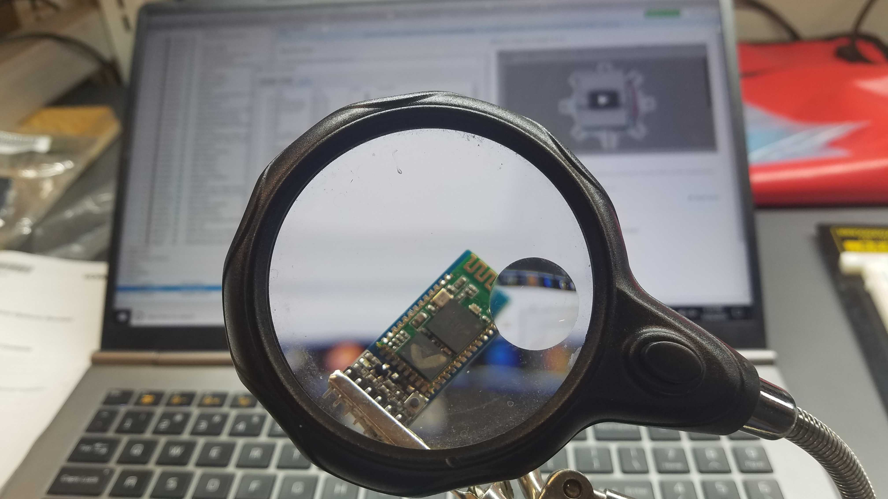
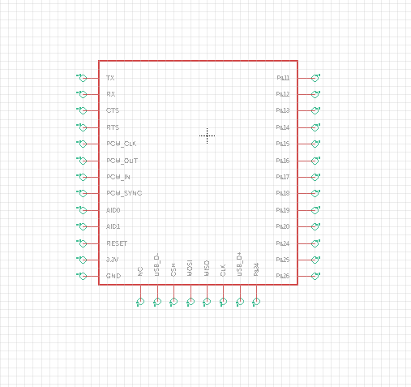
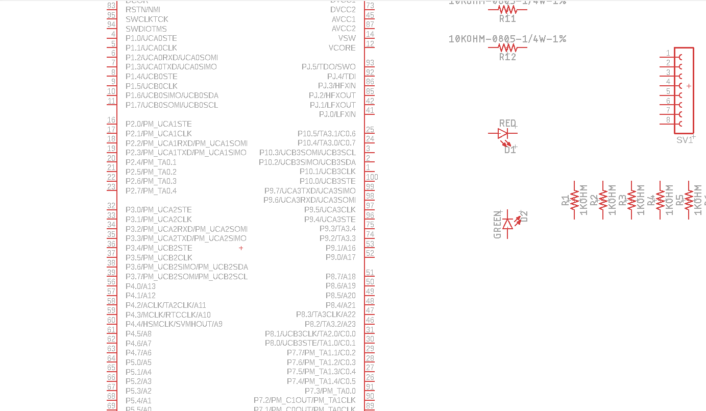
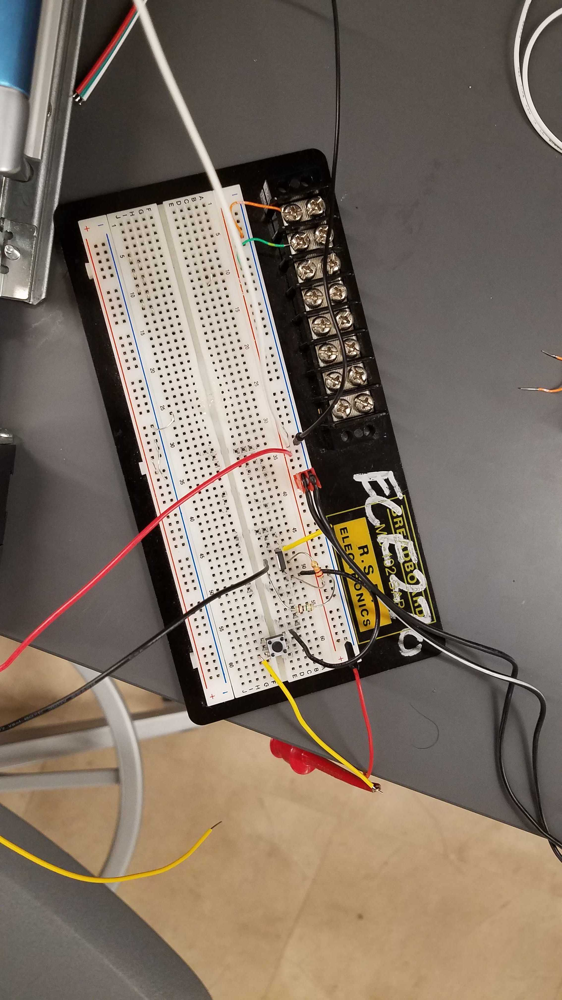
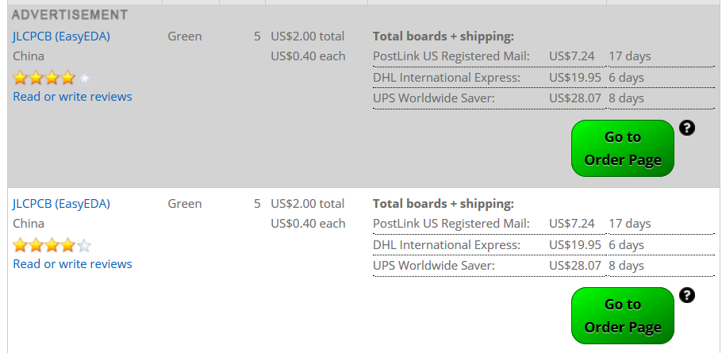
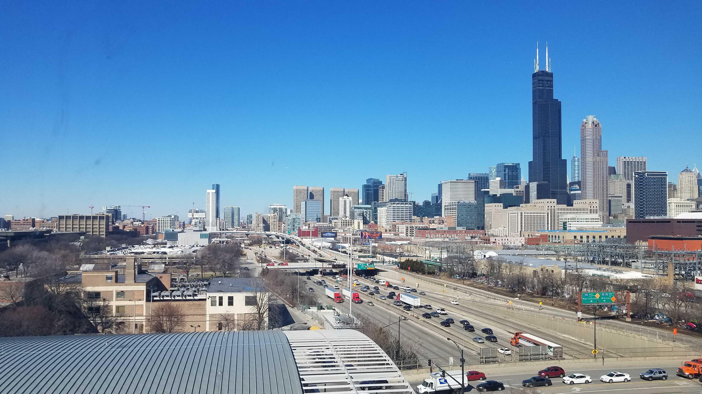
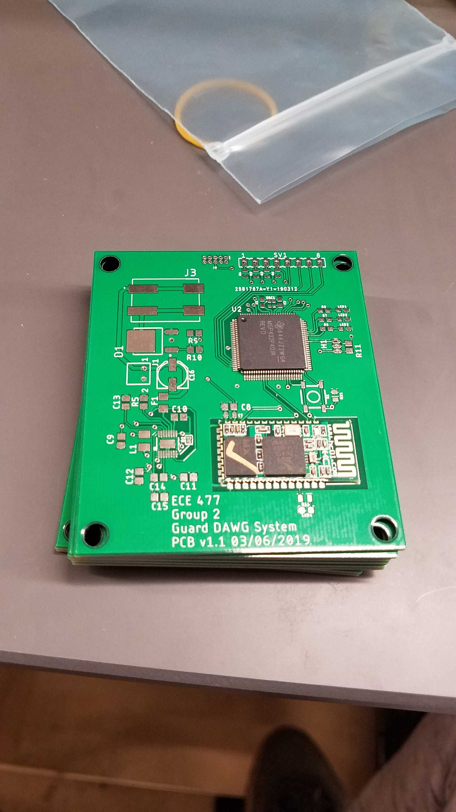
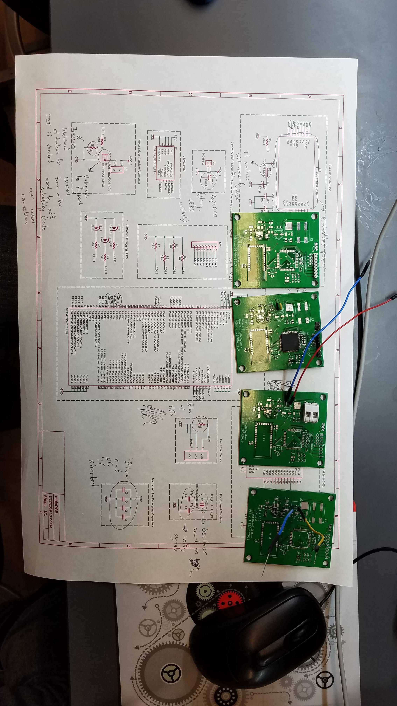

Figure 1.1: Team Photo
Week 1:
Date: January 11, 2019
Total hours: 12
Description of Design Effors:
We revised our initial design proposal, and determined the basic functionality of our project, and determined
what our microcontroller would be (MSP432), as well as assigning roles to the relevant people. In addition, we planned
out our work schedule for meetings for the remainder of the semester.

Figure 2.1: Devboard MSP432
Week 2:
Date: January 18, 2019
Total hours: 12
Description of Design Effors:
This week, I was able to procure most of the materials we needed to proceed with out prototyping, such add
the development board for out microcontroller (MSP432), the Bluetooth module, numeric keypad, Hall effect sensor, and
Raspberry Pi. In the next week, we will begin prototyping every required module for our design. Along with the rest
of the team, we narrowed the scope of our PSSC's and further explained the overall purpose they serve.
In addition, I began considering the functional, software, power, and electronic constrains needed for our
design to function properly. I will begin laying out the schematic in the next week as well.
 Figure 3.1: Bluetooth Module
Week 3:
Date: January 25, 2019
Total hours: 13
Description of Design Effors:
This week, my primary focus was on consolidating the information regarding the embedded hardware required for the design,
so I put most of my time into determining how the hardware would function together. I finalized the choices of the development
boards and breakout boards, most importantly with the Bluetooth module. In order to simplify the design, we decided to change
one of our PSSC's, to reflect the decision to interface with Bluetooth from I2C to UART.
I also installed the required softwares for electrical layouts, such as Autodesk Eagle and Ultra Librarian, and have begun
laying out the first iteration of the board, as well as referencing datasheets to determine what kind of power requirements are
needed for the components. I have begun making footprints for our MSP432 iteration for the PCB, since the one provided by Texas
Instruments is out of date.

Figure 4.1: Allegion Lock
Week 4:
Date: February 1, 2019
Total hours: 15
Description of Design Effors:
This past week, I put more time into the Eagle schematic, as well as refining the power electronics needed
for each of the embedded components. I have all of the requisite footprints required to port the schematic to
a PCB, and after a design review next week, will begin laying out the board.
The other major thing I did was to dive into the motor interface for the door lock. After speaking at length
with Todd about Allegion lock interface systems, I was able to actuate the lock with the desk power supply.
In the coming week, I will try to get the full motor system integrated with the microcontroller and Hall effect sensor.
Once this step is complete, we will be able to mount it to the door and begin laying out the wiring.
 Figure 5.1: Chip Schematic
Week 5:
Date: February 8, 2019
Total hours: 8
Description of Design Effors:
I wasn't able to put in as much time with my specific tasks this week. Instead, I mostly helped other people
with accomplishing their tasks, such as understanding the microcontroller interface, assisting with the mechanical
overview, and helping formalize the software.
More work was put into the EAGLE schematic, with the ultimate goal of finishing up the layout by Sunday. I have
all of the symbols and most of the footprints laid out, and will endeavor to get most of the 3D models completed by
next Friday.
 Figure 6.1: PCB
Week 6:
Date: February 15, 2019
Total hours: 18
Description of Design Effors:
This week, I was able to complete more of my PCB, and finished designing my power systems. Some of the traces
are laid out in my PCB design, but more work needs to be put into routing and setting up my ground port. I decided to
add an opto-isolator to the design, in order to make the embedded components more protected from noise in the power electronics.
In addition, I helped Viktoryia with debugging her driver code for the Bluetooth module. She was able to successfully
link the Bluetooth module, microcontroller, and Raspberry Pi to send messages wirelessly. In the next week, we will be fully integrating
our entire system on the breadboard, and testing the overall functionality of our driver code.
 Figure 7.1: FET setup to motor driver
Week 7:
Date: February 22, 2019
Total hours: 25
Description of Design Effors:
I had to redesign my power systems, since my original designs involved the use of 3 distinct power cables, as well as
having it be still attached to the board. In order to minimize the design, I chose to isolate the power components and embedded components
onto their own separate boards, so that we could minimize the overall board space needed, and to make it into a more tight package.
This week, I also had to complete the Software Formalization document, where I describe the main details for the embedded and high-level
software. I carefully documented the testing plan for each software component, to ensure that there will be as few surprises as possible when
testing them on our main PCB.
I was also able to dog/undog the motor with the use of an embedded signal and FET.
 Figure 8.1: Order price ranges
Week 9:
Date: March 8, 2019
Total hours: 13
Description of Design Effors:
I mostly spent this week and some of the previous week implementing the changes in the PCB that reflected the comments Todd and Mithuna
made in the design review, such as modifying ground traces, increasing some trace widths, and some other simple tasks. I was able to complete the PCB design and order the boards along with the components.
They should arrive sometime close to the beginning of break. In addition, I was able to add some more things to the board, such as an on-off switch for power, and a reset switch for the microcontroller along
with several test points to make solder debugging much easier.
 Figure 9.1: Chicago skyline
Week 10:
Date: March 15, 2019
Total hours: 1
Description of Design Effors:
It's Spring Break. I spent most of this week in Chicago. I stopped by lab to drop off some components, as well as our PCB's.
 Figure 10.1: Bare PCB's
Week 11:
Date: March 22, 2019
Total hours: 14
Description of Design Effors:
We received our PCB's over break, and have begun soldering them this week, as well as noting any changes we would have to make for version 2 of the
board. The initial boards were all individually tested, with visual and continuity checks, to determine if any manufacturing errors were made.
A few small issues were noted with some of the hole sizes for the power connectors, as well as some of the isolates for the power traces, but there are no
issues that will keep the design from working. In the next week, I will finish soldering and testing two boards in their entirety, and will make small adjustments
and order version 2 by Sunday of next week.
 Figure 11.1: Different testing PCB's with components attached
Week 12:
Date: March 29, 2019
Total hours: 25
Description of Design Effors:
I have been unit testing our PCB's with all of our components, breaking up each of the boards into functional blocks and testing them
independently. Firstly, I tested the motor driver circuit, which partially worked, but we determined there to be an issue with
flyback current from the motor if it is suddenly depowered. Joe suggested a solution in the form of a Schottky diode, that sits close to the
solenoid. Next, I tested the LT3668 to determine if the voltage was being dropped correctly, and to see if it was working within a valid voltage
range.
I want to get PCB version 2 ordered by this weekend, with some of the changes including
different 24V power connector via's, a different programming header (possibly), some additional connections to the HC-05,
slightly different polygon structure for the LT3668, modified spacing to make some
components fit together better, and some others as they come up during testing this weekend.